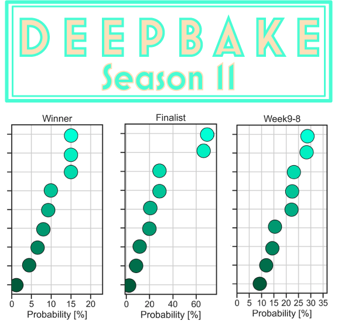
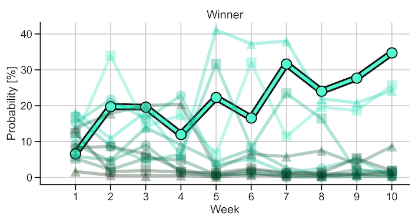

DeepBake
Baking Machine Learning into the Great British Bake Off
What is DeepBake?
DeepBake AI
DeepBake is a collection of neural network predictors, one for each week of baking. Each week, DeepBake calculates a probability score for each baker to be the winner, be one of three finalists, and make it to the quarter and semi-finals. For a more in-depth explanation please visit the GitHub repository
Season 11 Predictions
Season 11 Predictions
Every week tune in for the most up to date predictions for the GBBO Winner, Finalists, and other placings.
Click here for Season 11 Predictions
Season 10 Predictions
Season 10 Predictions
We put DeepBake to the test every week of Season 10. See how DeepBake guessed the winner and was correct more often than not at predicting who would leave the tent.
Click here for Season 10 Predictions
GitHub Repository
Github Repository
Check out the source code for DeepBake. DeepBake is built on python and implements the keras and tensorflow libraries for deep learning. Jupyter notebooks are located in the NOTEBOOKS directory.